A cabin, held by the land.
Reference register — the Bobocabin / glamping-modular vocabulary. Modern timber-and-steel cabins set inside tea plantations, forest ridges, dusk skies. The cabin reads as small inside a large hush; people are almost never the subject.
Audit log · 28 May 2026 batch.
Seven new references scored against the brand OS imagery rules (00-principles · §F · Photographic register). Three accepted into the canonical moodboard. One requires care. Three refused, with the rule cited.
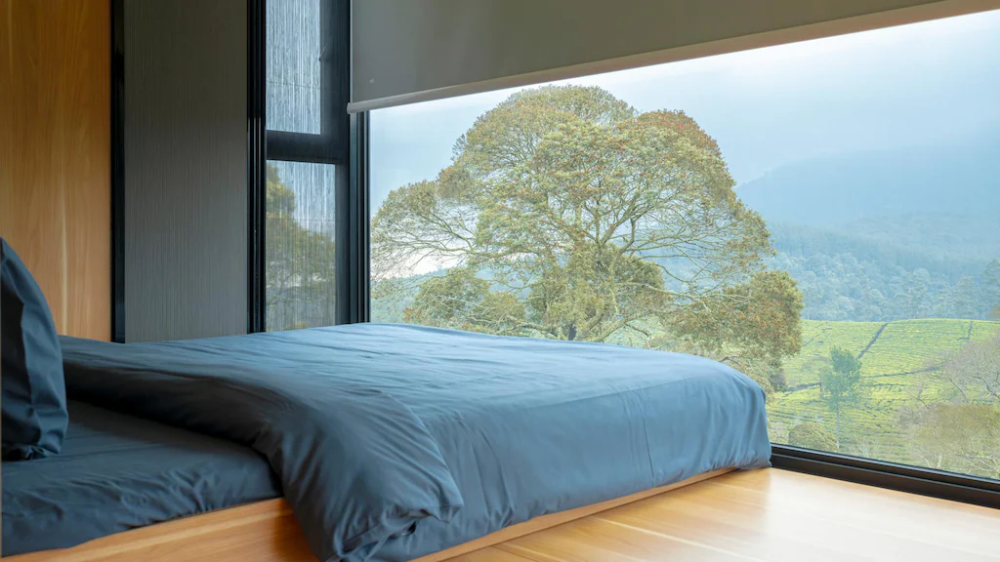
✓ Accept · canonical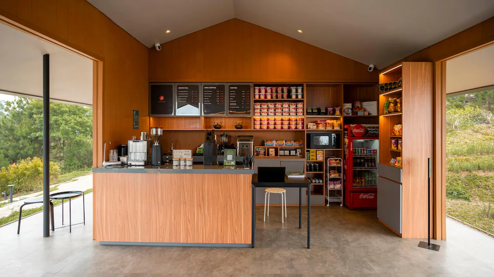
✕ Reject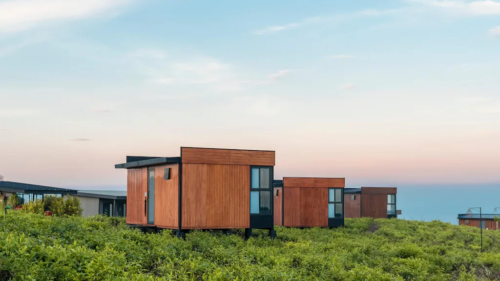
✓ Accept · canonical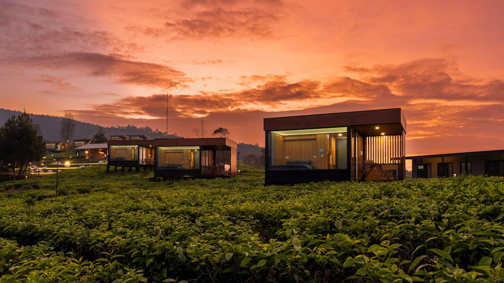
⚠ Tread carefully ✓ Accept · canonical
✓ Accept · canonical
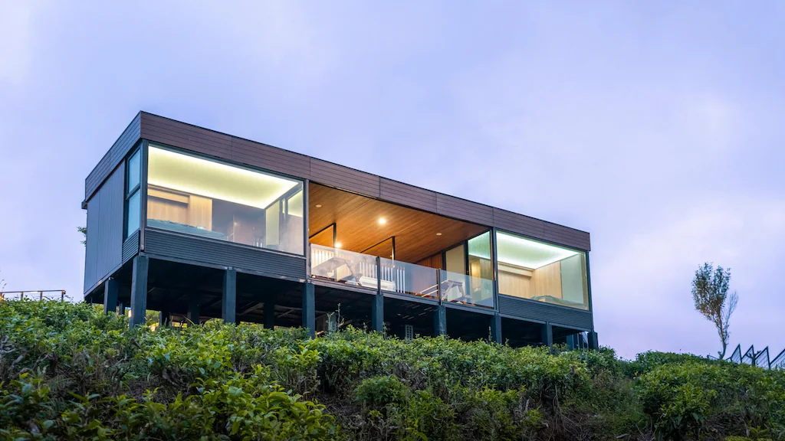
✕ Reject— Outcome 3 photos promoted to canonical (`cabin-bedroom-misty-view`, `cabins-tea-row-dusk`, `cabins-dusk-pathway`). 1 held for grade-pass. 2 refused, recorded here so the same source is not re-proposed.
Moodboard · the working palette.
Eleven references — eight from the original reference batch, three newly promoted. This is the register every working photograph is checked against.
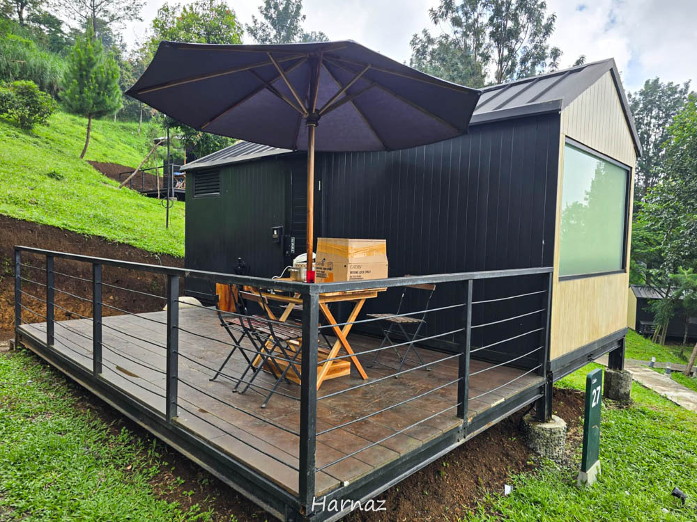
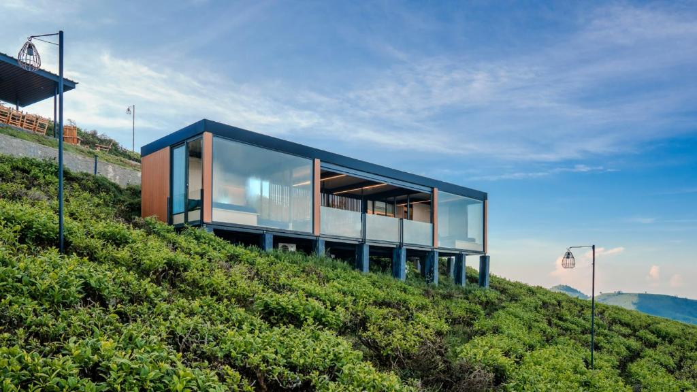
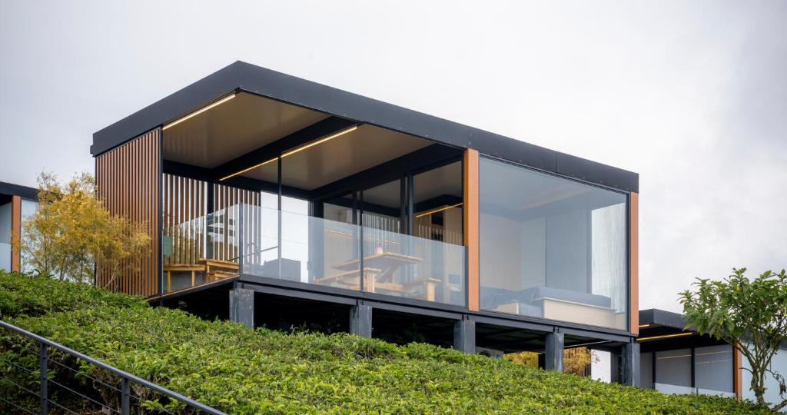
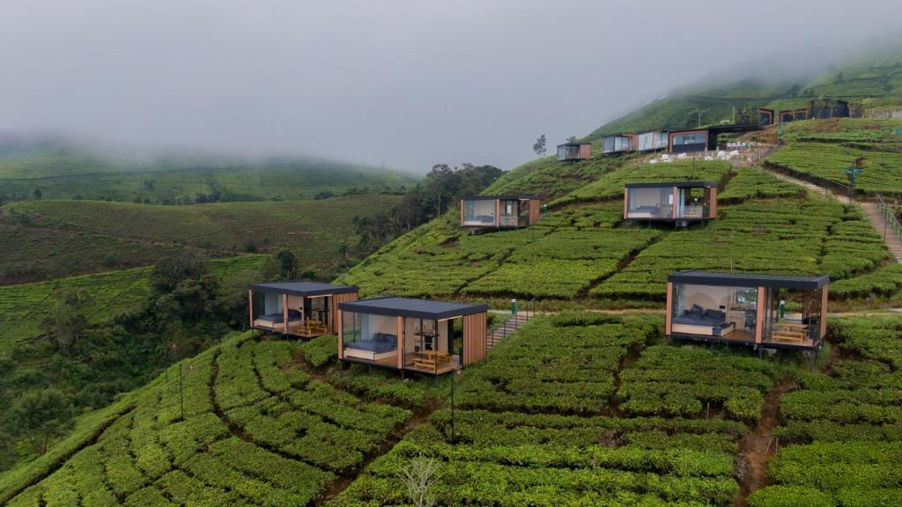

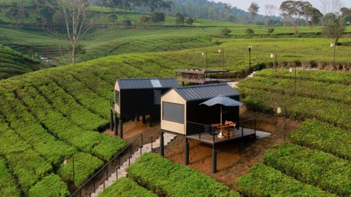

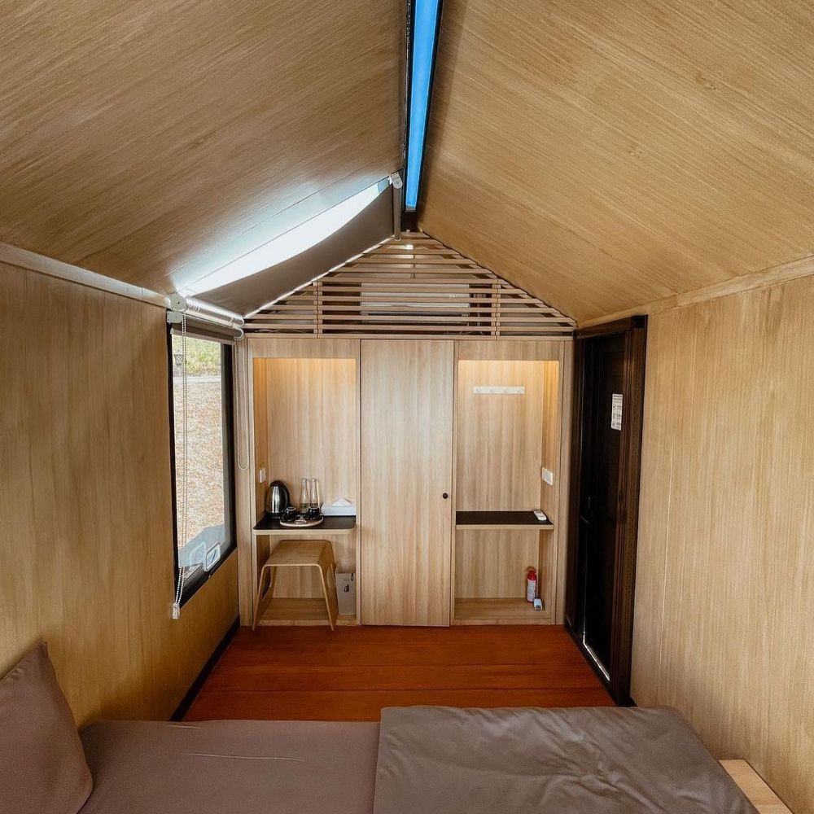
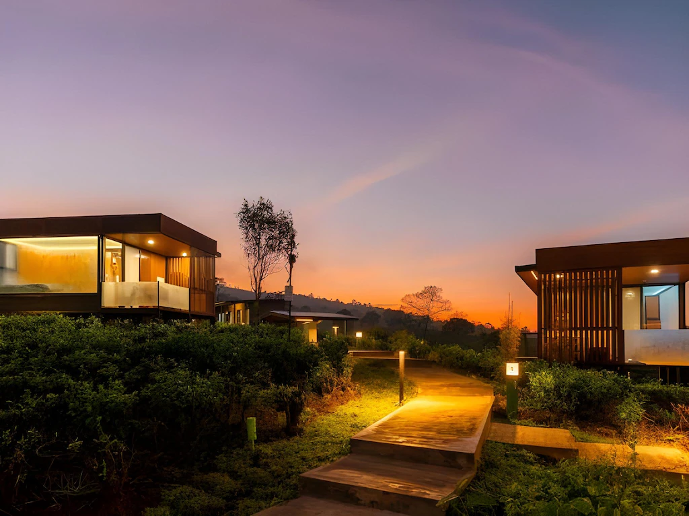

- Cabin in the landSmall inside a vast frame. Tea terraces, forest, mist.
- One warm windowRestraint reads as occupied.
- Real weatherMist, drizzle, dusk light read as time of day.
- Negative space for typeBottom-left quadrant stays quiet.
- Interior looking outThe view is the subject, not the bed.
- Numbered cabin markerQuiet wayfinding · part of the scene.
- Faces in foregroundLifestyle staging. The brand is what they walk into.
- Orange-and-teal gradeTravel-magazine cliché. Our palette is muted.
- Cabin as hero from belowThe cabin defers to the land — never the other way.
- Drone overheads of empty landNo land alone. Cabin + land, always together.
- Third-party brands in frameCoca-Cola fridges, retail signage, OTA marks.
- Saturated sunsets / fire skiesPull orange −15% in grade, or skip the shot.